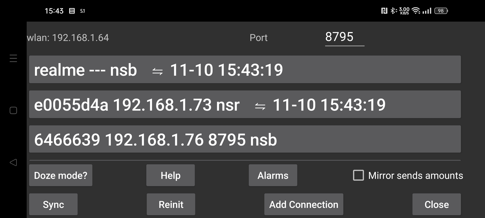

ar be de es fa fr hi it ja ko nl pl pt ru sv tr uk uz zh en
دادهها را به دستگاه دیگری بفرستید یا از آن دریافت کنید. میتوانید به دستگاه Android دیگری که Juggluco روی آن اجرا میشود متصل شوید تا دادهها در آن نیز به همان صورت نمایش داده شوند. دستگاه آینه پس از دریافت دادههای «اسکنها» میتواند خودش نیز از طریق بلوتوث به حسگر متصل شود. برای اطمینان از اینکه فقط یکی از دستگاهها با حسگر ارتباط دارد، وقتی مقدارهای «دادههای پیوسته» از طریق IP/TCP میرسند، «منوی چپ ← حسگر ← استفاده از بلوتوث» خودکار خاموش میشود.
در این صفحه، روبهروی «WLAN» نشانی IP محلی وایفای دستگاه نوشته شده است. برای اتصال در شبکهٔ خانگی، این نشانی را در دستگاه دیگر وارد کنید؛ اگر از راه دور متصل میشوید، تنظیمات مربوط را در مودم انجام دهید.
در قسمت «درگاه»، میتوانید درگاه TCP را تغییر دهید که این نسخهٔ Juggluco برای اتصالهای ورودی روی آن گوش میدهد.
در Android، بهینهسازیهای باتری و محدودیتهای اجرای پسزمینه میتوانند اتصالهای شبکهای پایدار را مختل کنند. گزینهٔ «حالت Doze» برای اصلاح این تنظیمات راهنما ارائه میدهد. (حالت Doze و باتری)
«آینه مقدارها را میفرستد»: اگر این نسخهٔ Juggluco مقدارهای دارو، غذا و فعالیت را از دستگاه دیگر دریافت میکند، نباید در این دستگاه مقدار جدیدی اضافه یا مقدارهای موجود را ویرایش کنید. فعالکردن این گزینه، این تغییرها را غیرفعال میکند.
«همگامسازی» در صورت امکان دادههای جدید را به دستگاه متصل میفرستد یا دادههای جدید را از آن درخواست میکند.
«راهاندازی مجدد اتصال»: اتصال موجود را میبندد و اتصال جدیدی ایجاد میکند.
«QR خودکار»: اتصالی برای ارسال همهٔ دادهها از این تلفن به Juggluco دستگاه دیگر میسازد. در تلفن دوم باید کد QR را با «منوی چپ ← عکس» اسکن کنید. (کد QR اتصال)
«وایفای» (فقط در Wear OS): اگر خاموش باشد، Wear OS برای صرفهجویی باتری پس از مدتی وایفای را خودکار خاموش میکند و Juggluco برای ارتباط ساعت و تلفن به بلوتوث تغییر مسیر میدهد. اگر روشن باشد، از Wear OS خواسته میشود وایفای را مدت بیشتری روشن نگه دارد، هرچند ممکن است باز هم خاموش شود. معمولاً به این گزینه نیازی نیست و توسعهدهندگان Wear OS معتقدند روشنماندن وایفای مصرف باتری را بهشدت افزایش میدهد.
اتصالهای موجود در یک فهرست نمایش داده میشوند. برای هر اتصال، برچسب، درگاه IP و ماه، روز و زمان آخرین همگامسازی موفق نشان داده میشود.
کارکرد هر اتصال با حرفهای زیر خلاصه میشود:
n: مقدارها (عددهای ثبتشده)
s: اسکنها
b: دادههای پیوسته (بلوتوث)
r: دریافت
برای اطلاعات بیشتر دربارهٔ اتصالهای «آینهسازی»، راهنمای «افزودن اتصال» و توضیحات وبسایت Juggluco را بخوانید. (افزودن اتصال)
میتوانید نسخهٔ Android برنامهٔ Juggluco را با کمک شبیهساز Android، مانند Genymotion، روی رایانهٔ Windows، macOS یا Linux اجرا کنید. در Linux (حتی Ubuntu زیر Windows) میتوانید از Waydroid نیز استفاده کنید. Juggluco در شبیهساز دادهها را از طریق اتصال «آینهسازی» از تلفن Android متصل به حسگر دریافت میکند. در شبیهساز Android Studio و Genymotion میتوانید حرکت دو انگشتی برای بزرگنمایی یا کوچکنمایی را با نگهداشتن کلید Ctrl و حرکتدادن ماوس شبیهسازی کنید. Waydroid این رفتار را پشتیبانی نمیکند، اما Juggluco آن را برای خودش پیادهسازی کرده است. (Genymotion) (Waydroid)